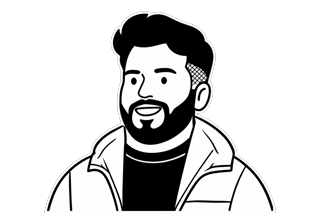
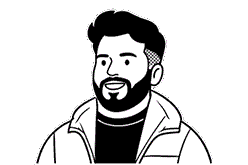

Rolan Gomes
UX Designer
Based in the UAE · Open to opportunities in Dubai, Abu Dhabi & Sharjah
I design systems, then direct AI to build them into working software.
A UX Designer with an engineer's ability to build. I built a Design System end to end, from token architecture to Code Connect, at a top-20 US accounting and consulting firm, then directed an LLM to convert it into a working frontend at an 80% component match rate in 7 days. Now looking for new opportunities across the UAE.
Highlights
- 6-product rollout planned Blueprint Design System adoption
- 80% match · 7 days AI-directed frontend POC
- 35 → 0 WCAG 2.2 violations remediated
- 14 → 1 CSS files consolidated
- $35k Sponsorship driven, Incridea 2022
My Featured Works
-
Blueprint Design System
Built a Design System for a top-20 US accounting and consulting firm. Led the Design and owned the decision making.
-
Healthcare SaaS Redesign
Rebuilt an AI-generated healthcare SaaS prototype into a systematic, trustworthy interface for enterprise buyers, solo, design to handoff, in two weeks.
-
Hub Platform Modernization
Led the front-end work across five connected efforts on one platform upgrade. Bootstrap 3→5 rebuild, WCAG 2.4.3 remediation, Azure AD B2C styling, and loading-state standardization. All shipped to production.
-
Incridea 2022 - Branding and Creative Direction
Full case study on BehanceLed the Design team for Incridea 2022. I was in charge of the Branding, creative direction and the execution of the fest theme on the digital, social media and physical media.
-
Making Design Systems Legible to AI
Using the Design System components, we directed and built a functioning frontend POC of a task management feature. Achieved 80% component match rate while converting Design to code.
Hey there, I'm Rolan!
I'm a UX Designer who thinks in systems. I work at the intersection of Design and Engineering, and focus on solutions that make good business. I love bringing making sense of messes, and figuring how to make it work. My mentor, Nabarun always says that "The space of ambiguity is a designer's best friend, as anything and everything is possible!"
I've been designing since 2019. In the beginning, it was all about creating logos, crafting brand identities, social media, posters, etc. Alongside freelancing as a Graphic Designer and running a business and leading the design team of the college fest, I was pursuing my Bachelors Degree in Mechanical Engineering. So building CAD models in college and then designing posters, both felt right at home to me. One thing about me, is that I don't restrict myself inside a box, and I don't shy away from a challenge. You might realize that when you see my academic and career history.
In my final year of Engineering, I was intrigued by the field of UX Design, learning about user experience, accessibility, usability, and all the other concepts. I could relate it to my experience with brand design, but realized that this is something very interesting and was also the best of both my worlds, Design and Engineering. Since then, I never really looked back. I started as a UI and Visual Designer, and quickly progressed to learning more and more about the experience side of things. I also picked up basic front-end development (brushing aside my code-phobia) and all these experiences only added to my understanding of design.
I love working with people. My journey as a designer has taught me firsthand that good people make good impact. I believe in being a force multiplier in teams that I'm a part of, and by bringing out the best in everyone and collaborating, teams can deliver beyond the sum of their parts.
From starting out in the small temple town of Udupi, to dreaming big in Bengaluru. I'm now dreaming bigger and bringing my expertise to Dubai and the United Arab Emirates. I'm looking forward to add value to your team and grow in my career.
I guess that's enough about me. Before we talk, here's a quick look at what I actually build with day to day, and the credentials behind it. Then let's talk about how I can help you.
Here's my toolbox!
DRAG THE SKILL STICKERS AROUND OR CLICK THEM TO READ MORE ON HOW I USE THEM. ENJOY!!! YOU CAN DRAG THE SKILL STICKERS AROUND ONLY ON DESKTOP MODE, AS BEING USABLE >>> BEING FUN! YOU CAN STILL CLICK THE STICKERS TO LEARN MORE!Continuous learning.
- Accessibility: How to Design for All Completed
- AI for Designers Completed
- Enterprise Design Thinking Practitioner Completed
- AI Ethics Completed
- Introduction to Web Accessibility Ongoing
- One Million Prompters Completed